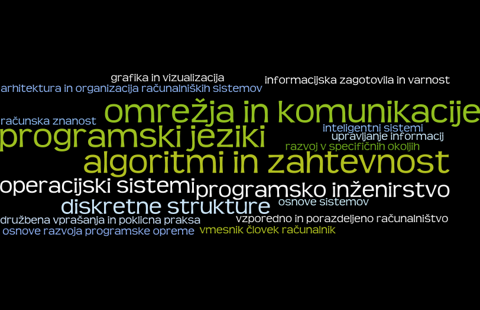

Licenca
To delo je na voljo pod pogoji slovenske licence Creative Commons 2.5:
priznanje avtorstva - nekomercialno - deljenje pod enakimi pogoji.
Celotna licenca je na voljo na spletu na naslovu http://creativecommons.org/licenses/by-nc-sa/2.5/si/. V skladu s to licenco je dovoljeno vsakemu uporabniku delo razmnoževati, distribuirati, javno priobčevati, dajati v najem in tudi predelovati, vendar samo v nekomercialne namene in ob pogoju, da navede avtorja oziroma avtorje in izdajatelja tega dela. Če uporabnik delo predela, kar pomeni, da ga spremeni, preoblikuje, prevede ali uporabi to delo v svojem delu, lahko predelavo dela ponudi na voljo le pod pogoji, ki so enaki pogojem iz te licence oziroma pod enako licenco.

S čim vse se ukvarja informatika
Da lažje opišemo pojme, poskušamo ljudje področje, ki ga opisuje posamezen pojem, razdeliti na podpodročja. Podobno je tudi pri Informatiki, ki jo lahko zato razdelimo na različne načine.
 Možna delitev področij pri Informatiki.
Ena od možnih delitev je kar po kurikulumu znanega svetovnega računalniškega združenja ACM. Klikni na vsako področje in si preberi s čim se ukvarja.
- algoritmi in zahtevnost (Algorithms and Complexity)
- arhitektura in organizacija računalniških sistemov (Architecture and Organization)
- računska znanost (Computational Science)
- diskretne strukture (Discrete Structures)
- grafika in vizualizacija (Graphics and Visualization)
- vmesnik človek-stroj (Human-Computer Interaction)
- informacijska zagotovila in varnost (Information Assurance and Security)
- upravljanje informacij (Information Management)
- inteligentni sistemi (Intelligent Systems)
- omrežja in komunikacije (Networking and Communications)
- operacijski sistemi (Operating Systems)
- razvoj v specifičnih okoljih (Platform-based Development)
- vzporedno in porazdeljeno računalništvo (Parallel and Distributed Computing)
- programski jeziki (Programming Languages)
- osnove razvoja programske opreme (Software Development Fundamentals)
- programsko inženirstvo (Software Engineering)
- osnove sistemov (Systems Fundamentals)
- družbena vprašanja in poklicna praksa (Social Issues and Professional Practice)
Kot vidimo, temeljna podpodročja informatike segajo od povsem matematičnih vsebin (na primer diskretne strukture) pa do zelo inženirskih vsebin (na primer arhitektura in organizacija računalniških sistemov ali programsko inženirstvo). Ni samo informatika povsod prisotna, zaradi njene pomembnosti so tudi v njej prisotna številna področja.
Vaja
Pri pisanju programa za štetje črk v besedilu uporabljamo znanja vsaj iz področij osnove programske opreme ter algoritmi in zahtevnost. Naštejte vsaj dve področji, ko iščemo podatke na spletu?